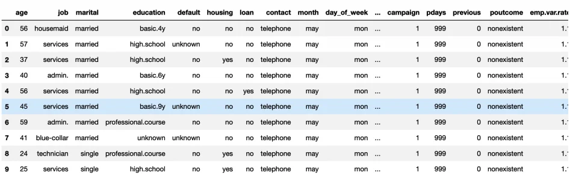

Published: 2019-12-03 | Originally published at AWS Blog
Update September 30, 2021 – This post has been edited to remove broken links.
Today, we’re extremely happy to launch Amazon SageMaker Autopilot to automatically create the best classification and regression machine learning models, while allowing full control and visibility.
In 1959, Arthur Samuel defined machine learning as the ability for computers to learn without being explicitly programmed. In practice, this means finding an algorithm than can extract patterns from an existing data set, and use these patterns to build a predictive model that will generalize well to new data. Since then, lots of machine learning algorithms have been invented, giving scientists and engineers plenty of options to choose from, and helping them build amazing applications.
However, this abundance of algorithms also creates a difficulty: which one should you pick? How can you reliably figure out which one will perform best on your specific business problem? In addition, machine learning algorithms usually have a long list of training parameters (also called hyperparameters) that need to be set “just right” if you want to squeeze every bit of extra accuracy from your models. To make things worse, algorithms also require data to be prepared and transformed in specific ways (aka feature engineering) for optimal learning… and you need to pick the best instance type.
If you think this sounds like a lot of experimental, trial and error work, you’re absolutely right. Machine learning is definitely of mix of hard science and cooking recipes, making it difficult for non-experts to get good results quickly.
What if you could rely on a fully managed service to solve that problem for you? Call an API and get the job done? Enter Amazon SageMaker Autopilot .
Introducing Amazon SageMaker Autopilot
Using a single API call, or a few clicks in
Amazon SageMaker Studio
,
SageMaker Autopilot
first inspects your data set, and runs a number of candidates to figure out the optimal combination of data preprocessing steps, machine learning algorithms and hyperparameters. Then, it uses this combination to train an
Inference Pipeline
, which you can easily deploy either on a real-time endpoint or for batch processing. As usual with
Amazon SageMaker
, all of this takes place on fully-managed infrastructure.
Last but not least, SageMaker Autopilot also generate Python code showing you exactly how data was preprocessed: not only can you understand what SageMaker Autopilot did, you can also reuse that code for further manual tuning if you’re so inclined.
As of today, SageMaker Autopilot supports:
Let me show you how simple this is.
Using AutoML with Amazon SageMaker Autopilot
Let’s use this sample notebook as a starting point: it builds a binary classification model predicting if customers will accept or decline a marketing offer. Please take a few minutes to read it: as you will see, the business problem itself is easy to understand, and the data set is neither large or complicated. Yet, several non-intuitive preprocessing steps are required, and there’s also the delicate matter of picking an algorithm and its parameters…
SageMaker Autopilot
to the rescue (here’s the updated
notebook
).
First, I grab a copy of the data set, and take a quick look at the first few lines.
import pandas as pd
df = pd.read_csv(local_data_path)
df.head(10)
Then, I upload it in Amazon Simple Storage Service (Amazon S3) in CSV format:
df.to_csv('automl-train.csv', index=False, header=True) # Make sure features are comma-separated
sess.upload_data(path='automl-train.csv', key_prefix=prefix + '/input')
's3://sagemaker-us-west-2-123456789012/sagemaker/DEMO-automl-dm/input/automl-train.csv'
Now, let’s configure the AutoML job:
input_data_config = [{
'DataSource': {
'S3DataSource': {
'S3DataType': 'S3Prefix',
'S3Uri': 's3://{}/{}/input'.format(bucket,prefix)
}
},
'TargetAttributeName': 'y'
}
]
output_data_config = {
'S3OutputPath': 's3://{}/{}/output'.format(bucket,prefix)
}That’s it! Of course, SageMaker Autopilot has a number of options that will come in handy as you learn more about your data and your models, e.g.:
One thing I don’t have to do is size the training cluster, as SageMaker Autopilot uses a heuristic based on data size and algorithm. Pretty cool!
With configuration out of the way, I can fire up the job with the
CreateAutoMl
API. Of course, it’s also available in the
AWS CLI
if you don’t want to use the SageMaker SDK.
auto_ml_job_name = 'automl-dm-' + timestamp_suffix
print('AutoMLJobName: ' + auto_ml_job_name)
import boto3
sm = boto3.client('sagemaker')
sm.create_auto_ml_job(AutoMLJobName=auto_ml_job_name,
InputDataConfig=input_data_config,
OutputDataConfig=output_data_config,
RoleArn=role)
AutoMLJobName: automl-dm-28-10-17-49
A job runs in four steps (you can use the
DescribeAutoMlJob
API to view them).
Once the maximum number of candidates – or one of the stopping conditions – has been reached, the job is complete. I can get detailed information on all candidates using the
ListCandidatesForAutoMlJob
API , and also view them in the AWS console.
candidates = sm.list_candidates_for_auto_ml_job(AutoMLJobName=auto_ml_job_name, SortBy='FinalObjectiveMetricValue')['Candidates']
index = 1
for candidate in candidates:
print (str(index) + " " + candidate['CandidateName'] + " " + str(candidate['FinalAutoMLJobObjectiveMetric']['Value']))
index += 1
1 automl-dm-28-tuning-job-1-fabb8-001-f3b6dead 0.9186699986457825
2 automl-dm-28-tuning-job-1-fabb8-004-03a1ff8a 0.918304979801178
3 automl-dm-28-tuning-job-1-fabb8-003-c443509a 0.9181839823722839
4 automl-dm-28-tuning-job-1-ed07c-006-96f31fde 0.9158779978752136
5 automl-dm-28-tuning-job-1-ed07c-004-da2d99af 0.9130859971046448
6 automl-dm-28-tuning-job-1-ed07c-005-1e90fd67 0.9130859971046448
7 automl-dm-28-tuning-job-1-ed07c-008-4350b4fa 0.9119930267333984
8 automl-dm-28-tuning-job-1-ed07c-007-dae75982 0.9119930267333984
9 automl-dm-28-tuning-job-1-ed07c-009-c512379e 0.9119930267333984
10 automl-dm-28-tuning-job-1-ed07c-010-d905669f 0.8873512744903564
For now, I’m only interested in the best trial: 91.87% validation accuracy. Let’s deploy it to a SageMaker endpoint, just like we would deploy any model:
model_arn = sm.create_model(Containers=best_candidate['InferenceContainers'],
ModelName=model_name,
ExecutionRoleArn=role)
ep_config = sm.create_endpoint_config(EndpointConfigName = epc_name,
ProductionVariants=[{'InstanceType':'ml.m5.2xlarge',
'InitialInstanceCount':1,
'ModelName':model_name,
'VariantName':variant_name}])
create_endpoint_response = sm.create_endpoint(EndpointName=ep_name,
EndpointConfigName=epc_name)After a few minutes, the endpoint is live, and I can use it for prediction. SageMaker business as usual!
Now, I bet you’re curious about how the model was built, and what the other candidates are. Let me show you.
Full Visibility And Control with Amazon SageMaker Autopilot
SageMaker Autopilot
stores training artifacts in S3, including two auto-generated notebooks
!
job = sm.describe_auto_ml_job(AutoMLJobName=auto_ml_job_name)
job_data_notebook = job['AutoMLJobArtifacts']['DataExplorationNotebookLocation']
job_candidate_notebook = job['AutoMLJobArtifacts']['CandidateDefinitionNotebookLocation']
print(job_data_notebook)
print(job_candidate_notebook)
s3://<PREFIX_REMOVED>/notebooks/SageMakerAutopilotCandidateDefinitionNotebook.ipynb
s3://<PREFIX_REMOVED>/notebooks/SageMakerAutopilotDataExplorationNotebook.ipynb
The first one contains information about the data set.
The second one contains full details on the
SageMaker Autopilot
job: candidates, data preprocessing steps, etc. All code is available, as well as ‘knobs’ you can change for further experimentation.
As you can see, you have full control and visibility on how models are built.
Now Available!
I’m very excited about
Amazon SageMaker Autopilot
, because it’s making machine learning simpler and more accessible than ever. Whether you’re just beginning with machine learning, or whether you’re a seasoned practitioner,
SageMaker Autopilot
will help you build better models quicker using either one of these paths:
Now it’s your turn. You can start using SageMaker Autopilot today in the following regions:
Please send us feedback, either on the AWS forum for Amazon SageMaker , or through your usual AWS support contacts.
— Julien
Julien is the Artificial Intelligence & Machine Learning Evangelist for EMEA . He focuses on helping developers and enterprises bring their ideas to life. In his spare time, he reads the works of JRR Tolkien again and again.
{kind=link}
{kind=link}